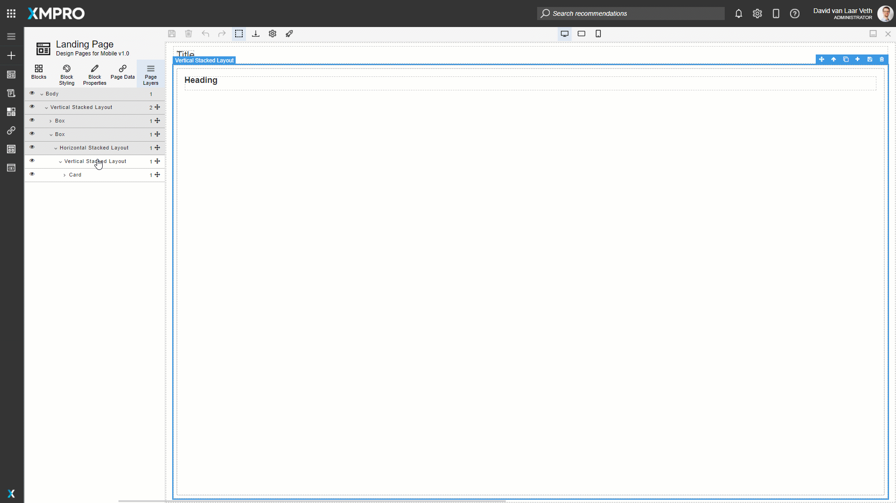
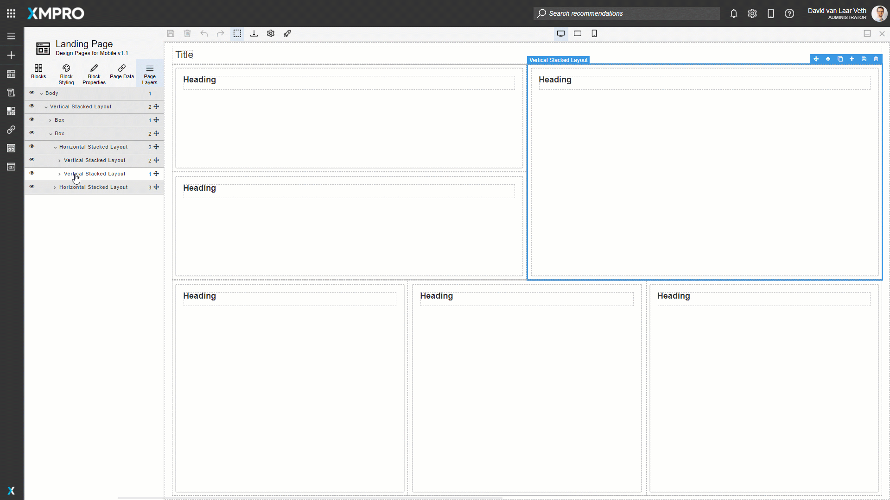
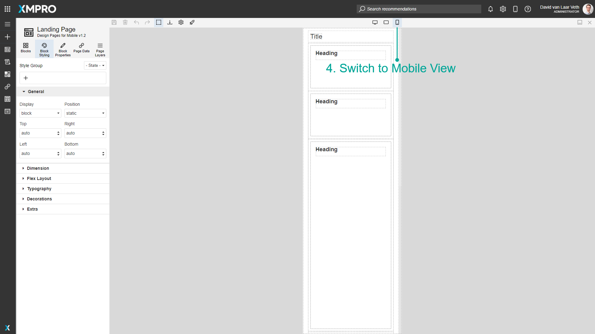
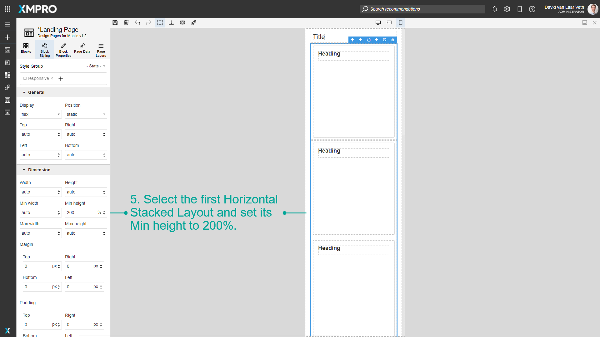

Design Pages for Mobile
When designing Pages, you may want to use responsive web design principles to support different screen sizes with the same App. This is easily accomplished with Block Styling and Devices. The default Page Layouts that you can choose from when creating a page have built-in responsive styling applied to the cards. For an example of this, see the Responsive Page Layout Example.
Note
It is recommended that you read the article listed below to improve your understanding of how to design pages for mobile.
How to Make Responsive Card Layout
To create a responsive card layout just like the default page layouts, follow the steps below:
- Create a Page with the first, single-card layout.
- Clone the Horizontal Stacked Layout, Vertical Stacked Layout, and Card until you have the layout that you desire. Please note that the order in the Page Layers will also be the order, from top to bottom, that items appear in mobile.
- If you want rows and columns to take up a different ratio on the page, adjust the Flex Grow of the relevant items. Make sure to uncheck Style Groups when applying styles to a specific element if you do not want the style to apply to the Style Group. More info on Flex can be found here.
- Switch to Mobile view with the middle Devices section of the command buttons.
- Adjust the heights of the elements. Any styles added in Mobile mode will apply only when the device's screen width is smaller than a threshold. In this case, change the first Horizontal Stacked Layout's Min height to 200%.




Last modified: May 27, 2025